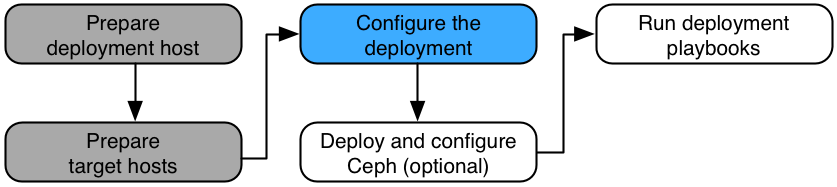

Configure the deployment (optional)#
Ansible references some files that contain mandatory and optional configuration directives. Before you can run the Ansible playbooks to install Rackspace Private Cloud Powered By OpenStack (RPCO), you must modify these files to define the target environment. Perform the following optional tasks as necessary:
- Configure proxy environment variables
- Configure the hypervisor
- Configure the Image service
- Configure the Block Storage service
- Configure the Object Storage service
- Configure and mount storage devices
- Configure an Object Storage deployment
- Object Storage monitoring
- Allow Identity users to use Object Storage (optional)
- Deploy Object Storage on existing RPCO software (optional)
- Integrate Object Storage with the Image service (optional)
- Configure Object Storage for multiple regions (optional)
- Object Storage tuning (optional)
- Configure HAProxy
- Configure MaaS variables
- Generate F5 load balancer configuration
- Configure Active Directory or LDAP
- Configure Dashboard SSL settings
- Configure security hardening